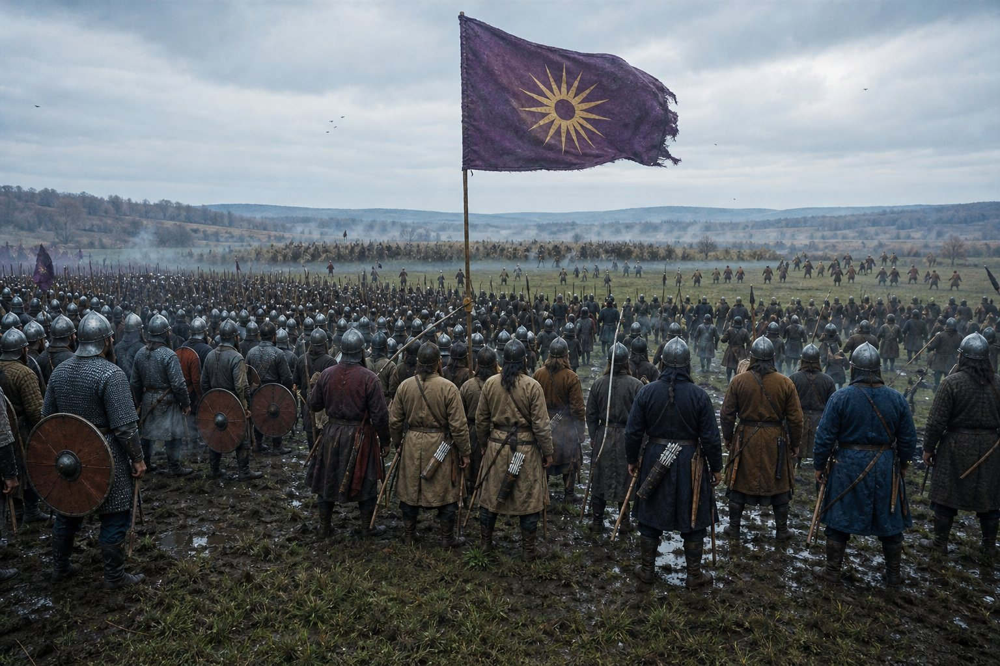
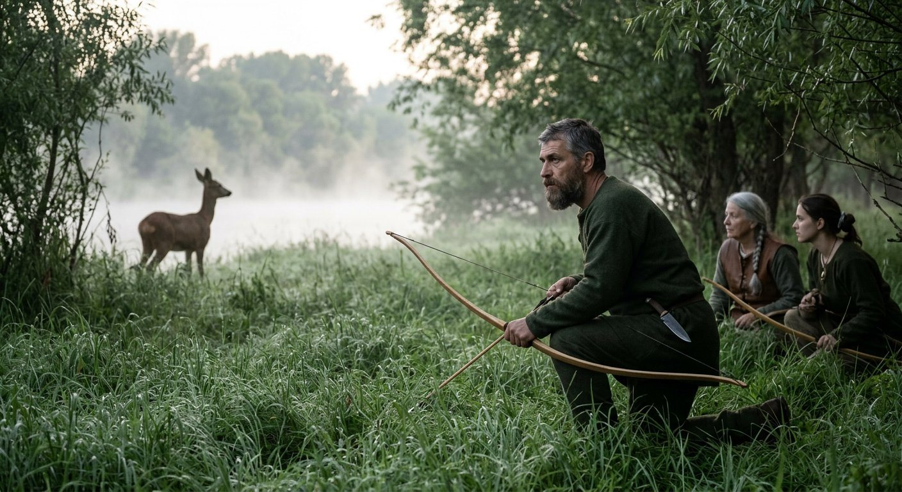
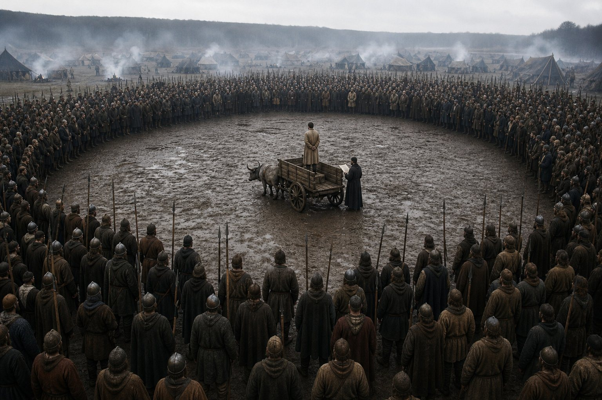
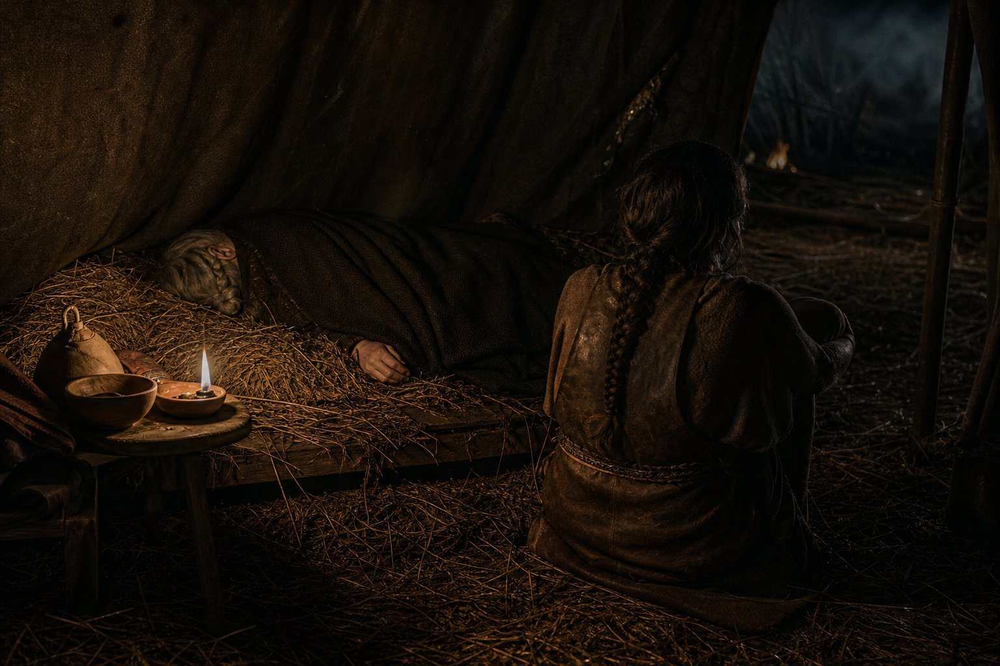
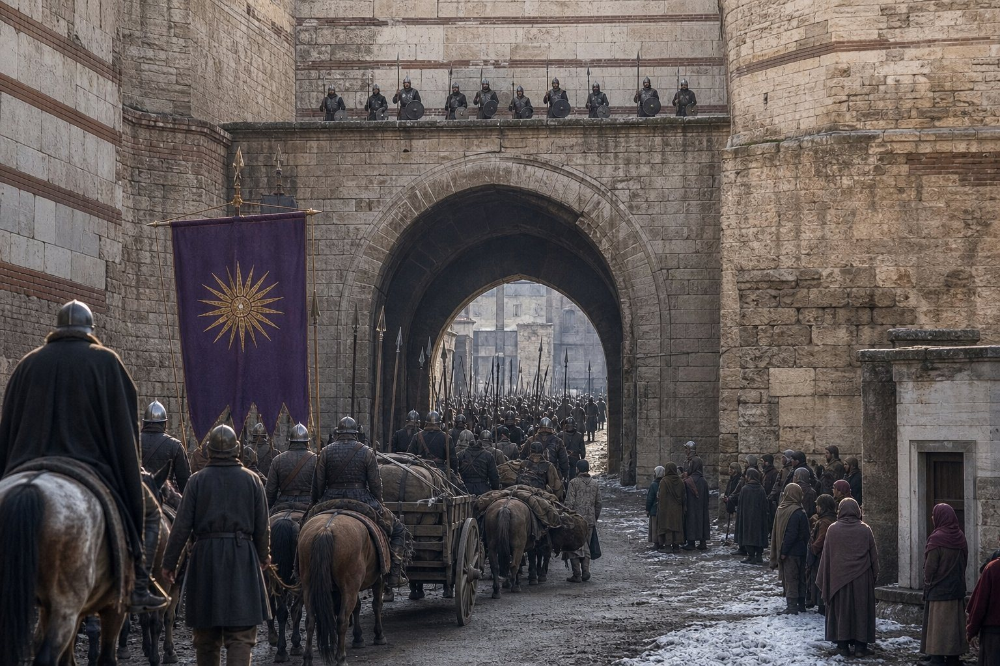
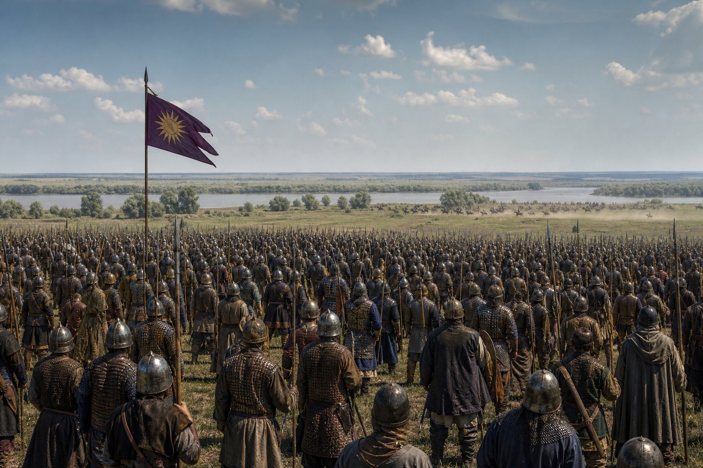
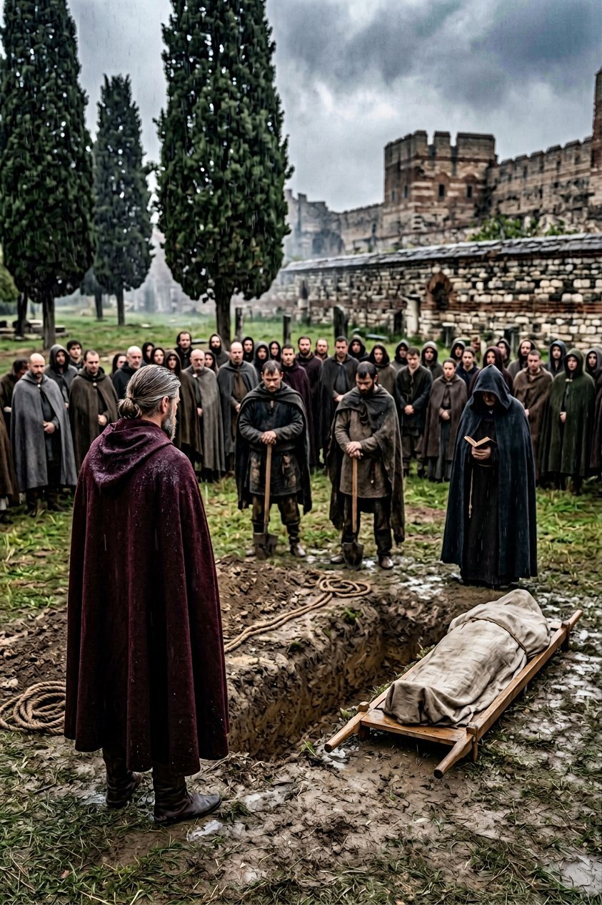
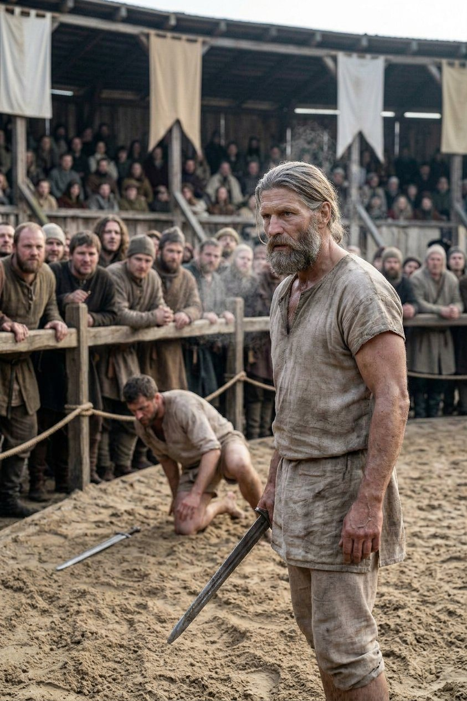
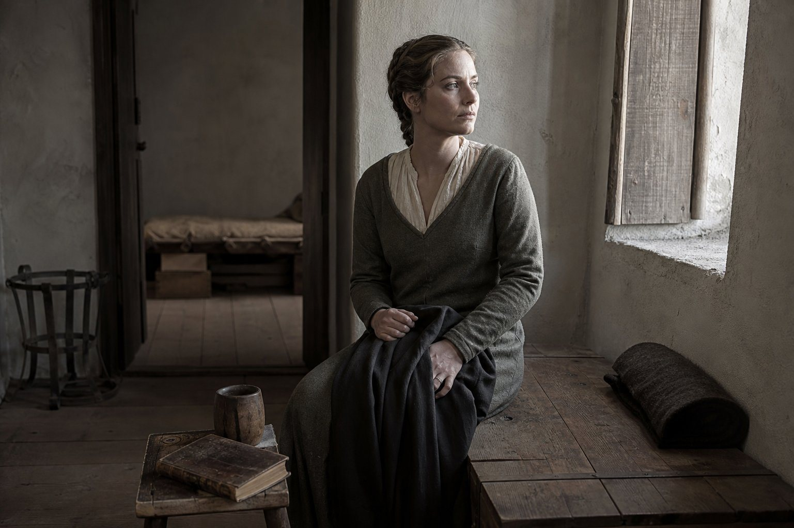
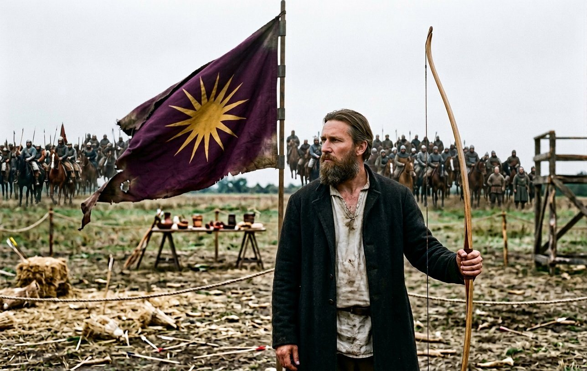

The last year of the old trade
The war at Stoenești ended on the first day of the twelfth month of 898, and the company had fought its last action in it seven months before, and had spent the difference being paid.
That is how these things finish. There is no field at the end of a contract. There is a letter, or a man on a mule, or a line in somebody's book in another country. Franjo's side won; Feodosia's war failed; and I have written that sentence in three different ways in three chapters now and it has not got any truer.
What the company did in the meantime was Târgoviște.
In the eleventh month we took the field against a man called Valassi with three hundred and one men, and we had sixteen hundred and sixty-five, and all of his were lost and none of ours. None. I want that written down plainly because it is the fourth time in this book that I have been able to write it, and because the reader should notice what kind of war produces that number. Sixteen hundred against three hundred is not a battle. It is a door being opened.

The sun went up before the line at Târgoviște, and that is the thing I want to write about, and it is not the battle.
We have carried it since 879, on purple, sixteen rays of gold, and for nineteen years it has meant one thing in a camp and another thing entirely in the countries we were hired by. In our camp it is the house: it goes up over the Captain's tent and over the forge and over the pay-chest, and the Ayrudzi bow to it and the Zhanmadao do not, and the Georgians call it something in their own language that means the same as ours. In the countries we were hired by, it is a thing that makes men quiet. A German priest in 895 called it a pagan sign in a letter and the letter is in the record and the Captain read it and laughed.
At Târgoviște it went up in front of sixteen hundred men of eleven nations, and every one of them, without being told, turned his head. That is the whole of what a standard is for and I have never seen it work as plainly as it worked that morning. It is not a god. It is not a flag either, quite. It is the one thing in the field that everybody in the company owns and nobody in the country does.
Then we went home and spent the summer hunting, which is what a company does in the months between contracts when it has money and nothing to kill.
At Giurgiu in the fifth and sixth months he took a roe by lying in wait, and killed it on the thirteenth day of the sixth month, and it is in the record as an event of its own, ten words long, between two wars — the same way the cat was in the record, one line, no explanation. The record keeps a man's deer and not his reasons.

That summer is where Valdamerca and Kasame came into his favour, and I want to put their names here because both of them were women of the old company and both of them were going to die in this book, and neither of them is going to get a chapter.
Valdamerca had been with us since the eighties, from the north, and had stayed when half of them went; she kept the pay-chest with me for six years and could count faster than I could and never once let an officer take money out of the column without a line against it. Kasame came out of the east with the rest and had been in every camp since 879, two hundred and three entries in the record before she was done, and she rode better than any man in the company under forty.
They hunted with him that summer, and he liked them, and I do not know anything more than that, and a book that pretends to know more is lying.
And in the same month he put the hunt before a thing Athanasios had brought him — a piece of the camp's gossip, of the ordinary kind, involving an officer and a woman and a horse — and the record's own phrase is that the hunt came first. It is the second time the record has used that phrase about him and the first time was in 895, and I have begun to think it is not a joke. A man who prefers a roe in the bracken to a scandal in his own camp is not a man who is avoiding the scandal. He is a man who has decided, at some point, that he does not want to know.
Then the autumn came, and a man was executed at Giurgiu on the twenty-ninth day of the seventh month.
His name was Milos and he was of Galați, born in 865, thirty-three years old. He is in the record as a friend — the game's word, not mine — and in the same line as his death there is the word executed, and that is the whole of it. Who did it is not written anywhere.
I have thought about Milos for years, and what I think is this. A company of two thousand men living in a country is a company of two thousand men who are tolerated, and toleration has a price which is paid in examples. Somebody in that camp did a thing that could not be let pass, and the man who paid for it was a friend of the Captain's, and the record — which notes everything, which counted a cat — does not say who gave the order.
I asked him once, years later, when he was a king and it was possible to ask him things. He said: it was mine to do and I did it and I am not going to be interviewed about it in my own hall.
And I said: and it was right?
And he said: it does not matter whether it was right. It matters that on the day after it, two thousand men who had watched it understood exactly what the company would and would not allow, and a great many of them were frightened, and frightened is a thing an army can be for a season and cannot be for a year.

I have written him in because a book that only records the men who died in the line is a book that has decided the line is the only place a man can be killed. Milos was executed at Giurgiu in the seventh month of 898 by his own people, and the record calls him a friend of the Captain's, and the Captain never spoke of him again in my hearing.
Delaram died in her sleep in the eleventh month, on the nineteenth day, at Giurgiu, and she was of the roll of 879.
She was one of the ones who came out of the north. Not a captain, not a name on the tent-poles: an ordinary woman of the old company, forty-odd years in the trade, and she died in a bed like a burgher's wife with the wagons outside the window and the camp quiet.

I sat with her the night before because she had asked for someone and I was the someone. She talked about Okhotsk. Not the storm — the winter, and the smell of the fish, and a man called something she could not remember, and she laughed twice, and in the morning she was dead.
Of the hundred and some who came south from the sea with us in 879, that was the tenth or twelfth to go, and I have stopped counting because the counting was making me old faster than the winters.
The city
We went to Constantinople in the first month of 899, and it was the first time in this book that the company came into a city that was, in some sense, its own.
That is not as simple a sentence as it looks, and I want to get it right, because it is the centre of what this volume becomes.
The Captain is a Macedonian. He speaks Greek as his second tongue and he writes it better than most of the men in the company write anything. Chrysogonos is a Roman of the city, born within sight of the walls, and eleven of our officers are Greeks of one kind or another, and the faith in the record that the Captain carries, the one called Hellene, counts Athens among its holy places. So Constantinople should have been home.
It was not. I watched it from the moment the column came through the gate.
They let us in. That is the word. They let us in, and they watched us, and they charged us for the market and doubled it when they heard the accent of the quartermaster, and the city's own men-at-arms turned out on the wall above the gate we came in by, in a number that had nothing to do with our size and everything to do with our kind.
The Captain walked the Mese that first evening with four of us and no escort, which is a thing he did in every city, and I went, and I saw what he saw. A Greek city looked at a Macedonian captain of a foreign company and saw a man with two thousand soldiers and an unregistered god. The sun on purple went ahead of us on a pole and the people in the street gave it a wide berth and did not look at it twice, in the way that people do not look at the thing they have decided to be afraid of.
Chrysogonos said, at the end of that walk, that the city had changed since he was a boy. The Captain said: no, it has not. You have.
And the Greek said: which is worse?
And the Captain said: you have. You have been outside.
That exchange is the whole reason I am writing this chapter the way I am writing it. Nineteen years these men have been tolerated: first because we did the small jobs nobody wanted — the tutoring, the counting, the border errand that needed twenty men and a Greek — and then because he could fight and men like Bela and Tepes and Simeon and the rest of them could use a company that won. Never because anybody wanted us. We were a useful thing that was allowed to be in the room.
And the terrible thing, the thing I have been circling since Târgoviște, is that after nineteen years of that a man begins to want the room.
Berta of the Árpáds came to us in the city on the eighteenth day of the first month, and became his friend, and joined.
She was a Hungarian of a great house, which in that trade means a woman with a name that opens doors in three countries and no money at all, and she came to the Captain in the way that the good ones always came: with a proposal, not a petition. I liked her within an hour and distrusted her within two, and both of those judgements have held for nine years.

Two rivers
In the second month of 899 we took a contract from Pyotr the Able, who held Kyiv, for a county called Halych, against a man the record calls Dyre the Stranger.
Six months of marching, and then in the sixth month two battles four days apart, on two rivers, and they are the reason this chapter has a slow first half.
At Buky we had four thousand four hundred and thirty-two men. Dyre had eleven hundred and sixty-six. At Cherkassy we had four thousand four hundred and twenty-seven, and he had eleven hundred and eighty-five. Between the two fields we lost sixteen men and he lost two thousand three hundred and fifty-one.

I am going to try to write those numbers properly, because they are the largest thing that has happened in a battle since Ploiești, and because a smith is expected to make a plain thing of a plain thing and I find that I cannot.
Four thousand men in a line is not four times a thousand men. It is a different substance. The line goes out of sight on both sides of you when you stand at the forge in the middle of it; the sound arrives from the left after the charge on the right has already finished; and the men at the ends of it fight a battle that has nothing to do with the men in the middle except that when it is lost, everybody knows at once.
Dyre's line was a third of ours and he fought it well, and it did not matter, and that is the sentence I cannot make plain. There is a weight in this trade that ends arguments, and we had it at Buky, and I watched eleven hundred men discover in an afternoon that being right and being brave and having the better ground adds up to nothing when the other man has four thousand.
Two rivers, four days, and at the end of it Kyiv kept Halych and we were paid, and the company came out of the east with sixteen empty saddles and a great deal of money.
Sixteen. I have the names and I am not going to print them here; they are in the roll with the year against them, in the Captain's own hand, and that is where they belong.
The rest of the year was the roll.
Álmos and Mihai died in the fifth month, both of them, and both of them had the cancer, and the record's line about what killed them is broken — it reads, in the translation, that they died of someone — and I am not going to supply a cause that the record cannot. Koinos died in the eighth month, on the twenty-first day, and the same broken line stands against his name.
Then, on the sixteenth day of the tenth month of 899, in the autumn, at the age of sixty-five, Tokifusa died.
I have put off writing this paragraph for four chapters.
He was the Captain's best friend. He had been in this book since the third chapter of it, since before the company had a name, and he had been the keeper of the letters and the ledgers and the Captain's worse handwriting for twenty years. He was Infirm for the last eight of them and half blind for the last four, and he rode in a cart and he kept working, and the younger Ana had been teaching him things in a wet camp below Vidin four years before because somebody had decided that a man of sixty-four who could not see should be taught.
He had a hundred and forty-nine entries in the record. That is more than most of the officers. It is not as many as Aghsartan, and he would have liked that I noticed.

What I will say about Tokifusa is this, and then I will stop, because a smith's eulogy is worth exactly what her work is worth and no more.
When the Captain was a boy out of Naniwa with a dead father's letter and no name of his own, Tokifusa was the man who said the names with him. That is in the first volume and it is the loneliest thing in this book. For nineteen years, in every camp, on every road, in every hall where a Macedonian with a foreign god was tolerated for an afternoon, there was one other man in the room who had come from the same place.
At the end of the tenth month of 899 there was not.
He was buried at Constantinople, where we had gone back for the winter, and the Captain stood at the graveside in the rain and did not say anything at all, and afterwards he went into his tent and did not come out for a day, and the company did not disturb him, because everybody in it understood what had happened even if half of them had never spoken to the man.
Illyria
The winter of 899 into 900 we spent in the west, on a contract from a lord called Gjin against a man the record calls Iljko the Monk, over a county called Završje, and that war ran a year and ended in Onogošt in the fourth month of 900 with two thousand two hundred and six of ours against six hundred and ninety-one of his, three of ours lost, and Gjin holding the county.
I remember that year for the tournament at Tarnów, which was in the first four months of 900 under a chieftain called Janko, and for the duel.
He was fifty years old.
I have written about eleven tournaments in this book and I have said, more than once, that the great ones are not won by the best man but by the man with the most reason. At Tarnów the reason was not glory and it was not money and it was not the record's word for it, which I have looked up and do not like.
It was Tokifusa. He was five months dead.
On the third day of the fourth month he beat a chieftain called Trifon. On the fifteenth he beat Snowid. On the twenty-eighth day of the fourth month he beat Matej in the final, and Matej had come out of the other semi-final, and there was nothing in the bout that I could see except a man of fifty who would not be put down.

He came off that field and I was at the rail with the rest of the company, and he looked at us and did not smile, and Athanasios said afterwards, in the way that Athanasios says things that are exactly true and should not be said: he is not fighting them. He is fighting the fact that he is fifty.
And then he was ill.
The year of the fevers
From the fifth month of 900 he was ill, and he was ill until the eleventh, and then he was well for a month, and then he was ill again from the twelfth month of 900 until the eighth month of 901.
Nine months on, one month off, eight months on. I want the reader to hold that against what the record says about the same years, which is a list of victories.
Two wars were taken in one day, on the fourteenth day of the seventh month of 900: Calafat, for a man called Alajos the Hunter, over Severin again — Severin, which this company has now fought over four times for four different men — and the rebellion of a lady called Ildey the Proud against Iltabar Yavdi II in the east. Two contracts, opposite directions, one signature.
At Deva in the second month of 901 we fought Evtimii with ten hundred and seventy-four against nine hundred and fifty-seven, all of his lost, fifteen of ours. Alajos took Calafat in the third month. Ildey's revolt, the record says, left Yavdi no longer holding a great title, and the record cannot say who sat in his chair after him, and neither will I.
And in the eighth to the eleventh month of 900 the company was in Greece: Megara, Strumica, Levadia, Thessaloniki. Four places in four months, and the Captain in a cart for three of them.
That is the part nobody writes. An army of two thousand men does not stop when its captain cannot sit a horse. It marches, it camps, it eats, it takes contracts, and the officers do the work, and a man is carried in a wagon at the head of it because the company is the company and the captain's presence is worth four hundred men whether he is conscious of it or not.
Men came to us in Greece. Arsenios the Craven — the record's word, and the company shortened it inside a fortnight — Leon of Argos, Theodoros the Heartless, and Vlastimir at Vratsa in the twelfth month, who could not have been more than nineteen and who could read.
I said in the fourth month of 896 that the roll was thinning. I have written nine deaths since.
The wife
On the sixteenth day of the first month of 901, in the winter, he married a woman called Raina, and the marriage was recorded at Beroe in the second month, where she joined the company.
She was twenty-eight. He was fifty-one.
The record gives her qualities and I will put them down as they stand, because a smith does not improve a list: Attractive, Patient, Trusting, Craven, and an Intricate Webweaver. Which is to say — and this is the only reading I can make of those five words together — a woman who was pleasant to look at, slow to anger, quick to believe, afraid of the things that ought to be feared, and rather better at arranging the world than anyone in that company expected.
She came with nothing written behind her. The record does not say where she was born, or whose daughter she was, or what she had been doing for twenty-eight years, and I have read her entry a hundred times looking for a country and there is not one.
I am not going to invent her a past. This book has been careful about that and it can be careful here. What I will say is what I saw, which is a woman of twenty-eight arriving in a camp of two thousand foreign soldiers, in a country that was not hers, to marry a man of fifty-one with a chest of gold, no land, a foreign god, and a fever he had had for eight months.
She was not frightened of the camp. That was the first thing. Every other woman who ever came into this company's business was frightened of the camp for a week and then stopped, and Raina was not frightened of it walking in.

I will now do a thing this book has done twice and never for a woman who was not of the company, which is to give her a page.
I am told that these pages are for the ones who keep the log, and that the smith has kept it since the year the record stops, and that the clerk kept it before her. I have read seven chapters of it. It is a strange book and it is stranger than the company realizes, because the company thinks it is a ledger and it is a confession.
I am to write my page on the second night after the wedding at Beroe, and I am going to write what I actually thought, which is not what a wife is supposed to have thought.
First: I did not marry him for love, and he did not marry me for it, and we both knew that at the table and neither of us has lied about it since. He married because he is fifty-one years old and has spent his life in a trade that ends in a ditch, and he wanted a house. I married because I have spent twenty-eight years being the woman in somebody else's household and I decided I would rather be the woman in a house of my own, even if the house has wheels on it.
Second: I did not expect him to be so quiet. The stories about this company that reach a woman in a small town are all swords. A man who had broken the armies of two kings and made a duke and unmade a count turned out to be a man who reads in the evening and does not talk at dinner and cannot remember the names of the horses.
Third: I am afraid of the camp and I did not show it, and the smith saw it in an hour and has been kind about it for a week, in the way that a woman is kind who has decided in advance not to have an opinion about you.
Fourth, and this is the one I will keep: on the second night, he told me about his father's letter.
That is all I will write. The log can have its page back.
In the hand of Matako
I read that page before I copied it into the roll, and I offered to leave the fourth part out, because it was his, not hers.
And she said: no, he told me in front of you.
That is how it is with them: everything of any consequence in that marriage was done in the open, with witnesses, as though the two of them had decided independently that the only way to survive being watched by two thousand people was to be seen doing exactly what they did.
Ten days after the wedding, in the second month, at Beroe, Yáoyuè the Strange died of a heart attack, aged sixty-three.
Another of 879. A miracle worker, in the record's phrase, which I have always taken to mean that he was the one men went to when the wound was going bad and the priest was busy. He died in a house at Beroe with the wedding cups still on the shelf, and the company buried him and went on with the march.
Momchil the Brute joined us at Beroe in the same month as the wedding, and I mention him here for the first and last time in this chapter, and I will not explain that.
The bow
The spring and summer of 901 were Komárom, a tournament under a lady called Držislava, and it went on for six months because a Hungarian tournament in a good year is a fair, a market, a court, and a war of its own.
On the twenty-first day of the fifth month, on the road to Komárom, Bertalan fell to his death.
He was sixty-six and he was a horse-dealer's man out of the north and had been with us since 885, and he died off a horse at a river crossing, which is how a third of the men in this book die when they do not die in a line. I have written that sentence before and it does not get easier to write.
On the twenty-fourth day of the seventh month the Captain won the archery at Komárom, at fifty-one, in the fourth year of a fever that had not let go of him.
And on the first day of the eighth month he took the Prize Bow.
I want to end my part of this chapter with the bow and not with the wedding, and the reader is entitled to know why.
Because a wedding is a thing two people do, and a book about a company should not end a chapter on something only two people were at. Because the archery at Komárom was the last contest he won as a captain of a free company in the years I am writing about, and the next ones are won by a king. Because at Beroe in the second month a woman had come into the company and said out loud, in her own hand, that the reason she had married him was a house.
And because, standing at the rail on the first day of the eighth month of 901 with the Prize Bow in his hand and the fever coming back on him and thirty regiments behind him and not one acre anywhere in the world that was his, he did the thing I have watched him do perhaps nine times in nineteen years, and it is the only ceremony in the whole of this trade that is any good.
He turned round and held it up to the company. Not to the chieftain's stand, not to the judges. To us.
Nobody cheered. Two thousand men, and they went quiet, which is what a company does when it has decided that a thing is worth being quiet about.

I have thought since — and I have thought it while writing this, at a table in a hall that has a throne in it, which is a sentence I did not expect ever to write — that the whole of what was about to happen to him was in that moment and none of us saw it. A man who has been tolerated for nineteen years holds up a prize and every foreigner in the field understands it, and that is a small rehearsal for a crown: the same gesture, the same crowd, and a country underneath it that will not understand it at all.